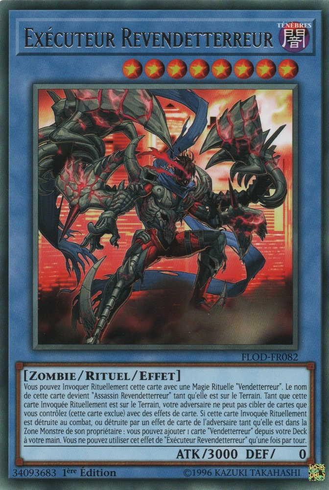

.jpg)
Les different type de carte
les carte magie
il existe 6 type de cartes magie : les carte magie normal,continue,d'équippement,de terrain,rituel et jeu rapide. ces carte se trouve dans le maindeck.
les magie normal
les carte magie normal sont des carte magie que vous pouvez jouez durant votre tour,apres leur utilisation elle vont au cimetiere.
les magie continue

ce sont des carte que vous pouvez jouez durant votre tour,elle reste
sur le terrain.
on les reconnais grace au symbole :
les magie d'équippement

ce sont les carte qui s'equipe à des personnage pour leur conferé
des bonus.
on les reconnais grace au symbole :

les magie rituel

elle servent a invoqué des personnage de type rituel.
on les reconnais grace au symbole :

les magie de terrain

ce sont des carte qui posséde leur propre zone "la zone terrain"
chaque joueur ne peut en controller qu'une, mais chaque joueur peut
sacrifier son terrain pour en jouer un nouveau.
on les reconnais grace au symbole :

les magie jeu rapide

il sagit de carte magie qui peux soite étre joué durant votre tour
soit étre paussé pour étre jouer durant le tour de votre adversaire.
on les reconnais grace au symbole :

les carte piege
il existe 3 type de cartes magie : les carte magie normal,continue et contre piege. ces carte se trouve dans le maindeck.
carte piege normal

les carte piege doivent étre paussé durant votre tour pour pouvoir étre activé durant le tour de votre adversaire.
carte piege continue

les carte piege doivent étre paussé durant votre tour pour pouvoir étre activé durant le tour de votre adversaire mais comme les magie continue elle reste sur le terrain.
on les reconnais grace au symbole :
carte contre-piege

les carte piege doivent étre paussé durant votre tour pour pouvoir étre activé durant le tour de votre adversaire,elle servent généralement a annulé une action de votre adversaire.
on les reconnais grace au symbole :
les cartes monstres
les carte monstre sont les différent personnage.
il existe 7 type de cartes monstre : les carte monstre normal, à effect,rituel pour le maindeck, fusion,synchro,xyz,lien pour l'extra deck .
les monstre normal
ce sont les monstre sans effect, ces cartes sont brun clair
monstre a effect

ce sont les monstre qui ons des effect,ces cartes sont brun foncé
monstre rituel
ce sont les monstres qui s'invoque grace au magie rituel,ces cartes sont bleu
pour plus de détaille :
crédit: joeri sama
monstre fusion

ce sont des monstres de l'extra deck pouvant étre invoqué en fusionnant d'autre monstre, ces cartes sont mauve
pour plus de détaille :
crédit: joeri sama
monstre synchro
ce sont des monstres de l'extra deck qui s'invoque en adissionnant le niveau d'étoile des monstre, ces cartes sont blanche
pour plus de détaille :
crédit: joeri sama
monstre XYZ
ce sont des monstres de l'extra deck qui s'invoque en utilisant plussieur monstre avec le meme nombre d'étoile,ces carte sont noir
pour plus de détaille :
crédit: joeri sama
monstre lien
ce sont des monstres de l'extra deck qui s'invoque en utilisant un nombre de monstre précis
pour plus de détaille :
crédit: joeri sama